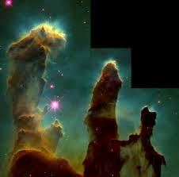
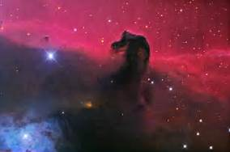
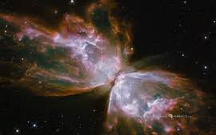

This image is a nebula. To be specific this is the pillars of creation nebula.Another name you might know this nebula by is the fingers of god.That name works as well.
Nebulae are also called stellar nurseries.This is because stars are born in a nebula
This is only one example of a nebula with a cool shaped nebula.Let me show you another one.

This is called the horse head nebula.At the first look you may think these are fake but they are real.
The image below the horsehead nebula is called the butterfly nebula.

| 1 | 2 | 3 |
| 4 | 5 | 6 |
| 7 | 8 | 9 |
Have you ever seen glass blowing? If not watch the glass blowing video on my website.
Do you like baked donuts? We also have a donut video for you to watch.Then when your done watching the pull of the donut will be so great that you will go out and buy one!
Dunken Donuts should thank me for doing them a favor!
Donuts are amazing for three different reasons.